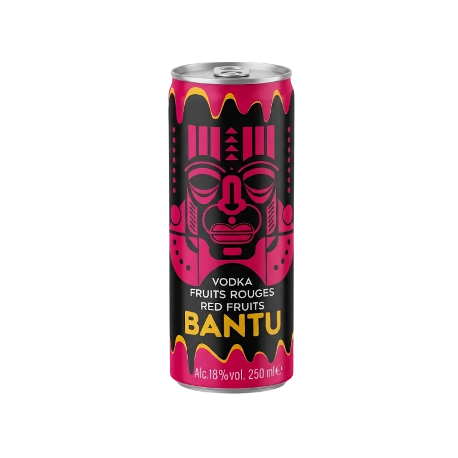

Grossiste Bantu · Prémix / Ready-to-Drink
Bantu Vodka Fruits Rouges
Bantu Fruits Rouges, boisson prête à boire à base de vodka, en canette 25 cl à 18 % vol. pour professionnels.
Canette 25 clPrémix / Ready-to-Drink18 % vol.
Produit alcoolisé. Vente interdite aux mineurs de moins de 18 ans. L’abus d’alcool est dangereux pour la santé. À consommer avec modération.
Présentation du produit
Bantu Fruits Rouges, boisson prête à boire à base de vodka, en canette 25 cl à 18 % vol. pour professionnels. Ce format complète les sélections destinées à la vente professionnelle. Pour connaître les quantités possibles, les tarifs HT et les modalités de livraison, contactez DisFly et demandez un devis adapté à votre activité.
Caractéristiques
- Marque
- Bantu
- Catégorie
- Prémix / Ready-to-Drink
- Conditionnement
- Canette 25 cl
- Contenance unitaire
- 25 cl
- Teneur en alcool
- 18 % vol.
Approvisionnement professionnel DisFly
Livraison en France sous 24 à 72h après validation de la commande, offerte à partir de 1 500€ HT. En Haute-Savoie, les conditions locales restent disponibles dès 250€ HT. Pour les tarifs, disponibilités, palettes ou volumes, demandez un devis personnalisé.